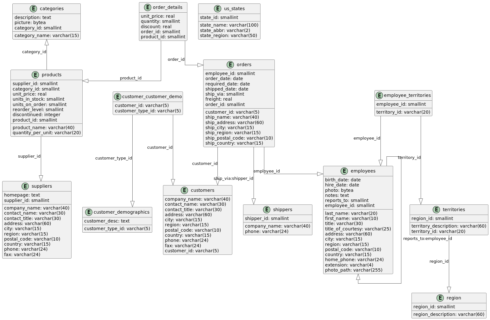
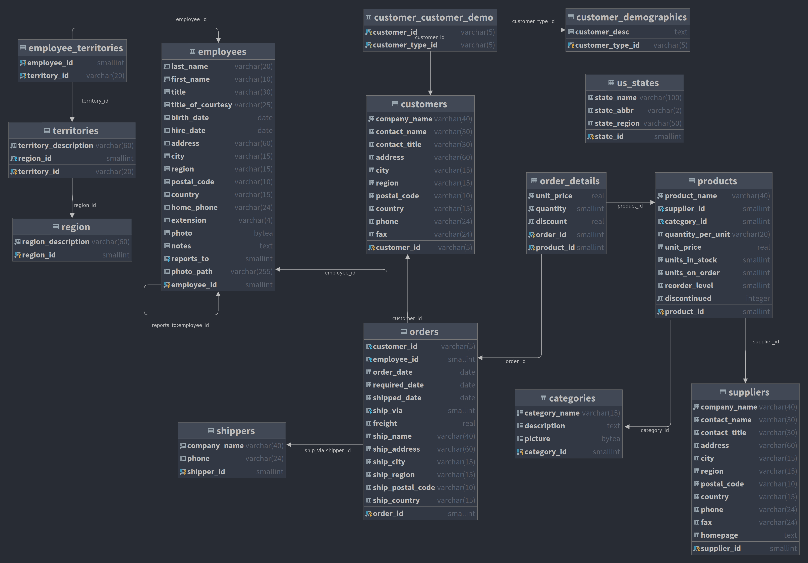

3. BD Northwind
Création
DEA
Code
@startuml
'!theme plain
top to bottom direction
skinparam linetype ortho
skinparam entityFontSize 18
skinparam entityFontName Source Code Pro
hide empty methods
hide empty fields
entity categories {
category_name: varchar(15)
description: text
picture: bytea
category_id: smallint
}
entity customer_customer_demo {
customer_id: varchar(5)
customer_type_id: varchar(5)
}
entity customer_demographics {
customer_desc: text
customer_type_id: varchar(5)
}
entity customers {
company_name: varchar(40)
contact_name: varchar(30)
contact_title: varchar(30)
address: varchar(60)
city: varchar(15)
region: varchar(15)
postal_code: varchar(10)
country: varchar(15)
phone: varchar(24)
fax: varchar(24)
customer_id: varchar(5)
}
entity employee_territories {
employee_id: smallint
territory_id: varchar(20)
}
entity employees {
last_name: varchar(20)
first_name: varchar(10)
title: varchar(30)
title_of_courtesy: varchar(25)
birth_date: date
hire_date: date
address: varchar(60)
city: varchar(15)
region: varchar(15)
postal_code: varchar(10)
country: varchar(15)
home_phone: varchar(24)
extension: varchar(4)
photo: bytea
notes: text
reports_to: smallint
photo_path: varchar(255)
employee_id: smallint
}
entity order_details {
unit_price: real
quantity: smallint
discount: real
order_id: smallint
product_id: smallint
}
entity orders {
customer_id: varchar(5)
employee_id: smallint
order_date: date
required_date: date
shipped_date: date
ship_via: smallint
freight: real
ship_name: varchar(40)
ship_address: varchar(60)
ship_city: varchar(15)
ship_region: varchar(15)
ship_postal_code: varchar(10)
ship_country: varchar(15)
order_id: smallint
}
entity products {
product_name: varchar(40)
supplier_id: smallint
category_id: smallint
quantity_per_unit: varchar(20)
unit_price: real
units_in_stock: smallint
units_on_order: smallint
reorder_level: smallint
discontinued: integer
product_id: smallint
}
entity region {
region_description: varchar(60)
region_id: smallint
}
entity shippers {
company_name: varchar(40)
phone: varchar(24)
shipper_id: smallint
}
entity suppliers {
company_name: varchar(40)
contact_name: varchar(30)
contact_title: varchar(30)
address: varchar(60)
city: varchar(15)
region: varchar(15)
postal_code: varchar(10)
country: varchar(15)
phone: varchar(24)
fax: varchar(24)
homepage: text
supplier_id: smallint
}
entity territories {
territory_description: varchar(60)
region_id: smallint
territory_id: varchar(20)
}
entity us_states {
state_name: varchar(100)
state_abbr: varchar(2)
state_region: varchar(50)
state_id: smallint
}
customer_customer_demo -[#595959,plain]-^ customer_demographics : "customer_type_id"
customer_customer_demo -[#595959,plain]-^ customers : "customer_id"
employee_territories -[#595959,plain]-^ employees : "employee_id"
employee_territories -[#595959,plain]-^ territories : "territory_id"
employees -[#595959,plain]-^ employees : "reports_to:employee_id"
order_details -[#595959,plain]-^ orders : "order_id"
order_details -[#595959,plain]-^ products : "product_id"
orders -[#595959,plain]-^ customers : "customer_id"
orders -[#595959,plain]-^ employees : "employee_id"
orders -[#595959,plain]-^ shippers : "ship_via:shipper_id"
categories ^-[#595959,plain]- products : "category_id"
products -[#595959,plain]-^ suppliers : "supplier_id"
territories -[#595959,plain]-^ region : "region_id"
@enduml
 
Requêtes
Bien sûr, je vais vous proposer quelques questions simples basées sur le diagramme entité-association (DEA) de la base de données Northwind que vous avez fourni. Ces questions se concentreront sur des requêtes impliquant une seule table, sans jointures ni regroupements, mais avec la possibilité d'utiliser des fonctions d'agrégation. Je vais également fournir les réponses sous forme de requêtes SQL pour PostgreSQL.
1. Listez tous les produits dont le prix unitaire est supérieur à 50.
Difficulté : 1
Code
SELECT product_name, unit_price
FROM products
WHERE unit_price > 50
ORDER BY unit_price DESC;
2. Combien y a-t-il d'employés au total dans l'entreprise ?
Difficulté : 1
Code
SELECT COUNT(*) AS total_employees
FROM employees;
3. Quels sont les 5 produits les plus chers ?
Difficulté : 1
Code
SELECT product_name, unit_price
FROM products
ORDER BY unit_price DESC
LIMIT 5;
Difficulté : 3
Code
WITH ranked_products AS (SELECT product_name,
unit_price,
DENSE_RANK() OVER (ORDER BY unit_price DESC) as price_rank
FROM products)
SELECT product_name, unit_price
FROM ranked_products
WHERE price_rank <= 5
ORDER BY unit_price DESC, product_name;
4. Listez tous les clients basés en France.
Difficulté : 1
Code
SELECT company_name, contact_name, city
FROM customers
WHERE country = 'France';
5. Quel est le prix moyen des produits ?
Difficulté : 1
Code
SELECT AVG(unit_price) AS average_price
FROM products;
6. Listez tous les fournisseurs qui ne sont pas basés aux États-Unis.
Difficulté : 1
Code
SELECT company_name, country
FROM suppliers
WHERE country != 'USA';
7. Combien de produits sont actuellement en rupture de stock ?
Difficulté : 1
Code
SELECT COUNT(*) AS out_of_stock_products
FROM products
WHERE units_in_stock = 0;
8. Quels sont les employés embauchés après le 1er janvier 1993 ?
Difficulté : 1
Code
SELECT first_name, last_name, hire_date
FROM employees
WHERE hire_date > '1993-01-01'
ORDER BY hire_date;
9. Quel est le produit le moins cher en stock ?
Difficulté : 1
Code
SELECT product_name, unit_price
FROM products
WHERE units_in_stock > 0
ORDER BY unit_price ASC
LIMIT 1;
Difficulté : 2
Code
SELECT product_name, unit_price
FROM products
WHERE units_in_stock > 0
AND unit_price = (SELECT MIN(unit_price)
FROM products
WHERE units_in_stock > 0)
ORDER BY product_name;
10. Listez toutes les catégories de produits par ordre alphabétique.
Difficulté : 1
Code
SELECT category_name
FROM categories
ORDER BY category_name ASC;
11. Listez tous les produits avec leur catégorie correspondante.
Difficulté : 2
Code
SELECT p.product_name, c.category_name
FROM products p
JOIN categories c ON p.category_id = c.category_id
ORDER BY c.category_name, p.product_name;
12. Affichez les noms des employés et les noms de leurs supérieurs directs.
Difficulté : 2
Code
SELECT e.first_name || ' ' || e.last_name AS employee_name,
m.first_name || ' ' || m.last_name AS manager_name
FROM employees e
LEFT JOIN employees m ON e.reports_to = m.employee_id
ORDER BY manager_name, employee_name;
13. Listez tous les clients avec leurs commandes, y compris ceux qui n'ont pas encore passé de commande.
Difficulté : 2
Code
SELECT c.company_name, o.order_id, o.order_date
FROM customers c
LEFT JOIN orders o ON c.customer_id = o.customer_id
ORDER BY c.company_name, o.order_date;
14. Affichez les détails des produits commandés dans la commande numéro 10248.
Difficulté : 2
Code
SELECT p.product_name, od.quantity, od.unit_price
FROM order_details od
JOIN products p ON od.product_id = p.product_id
WHERE od.order_id = 10248
ORDER BY p.product_name;
15. Listez tous les employés avec leurs territoires assignés.
Difficulté : 2
Code
SELECT e.first_name || ' ' || e.last_name AS employee_name,
t.territory_description
FROM employees e
JOIN employee_territories et ON e.employee_id = et.employee_id
JOIN territories t ON et.territory_id = t.territory_id
ORDER BY employee_name, t.territory_description;
16. Affichez les noms des fournisseurs et les noms des produits qu'ils fournissent pour la catégorie 'Beverages'.
Difficulté : 3
Code
SELECT s.company_name AS supplier_name, p.product_name
FROM suppliers s
JOIN products p ON s.supplier_id = p.supplier_id
JOIN categories c ON p.category_id = c.category_id
WHERE c.category_name = 'Beverages'
ORDER BY s.company_name, p.product_name;
17. Listez toutes les commandes passées par le client 'QUICK-Stop' en 1997.
Difficulté : 2
Code
SELECT o.order_id, o.order_date, e.first_name || ' ' || e.last_name AS employee_name
FROM orders o
JOIN customers c ON o.customer_id = c.customer_id
JOIN employees e ON o.employee_id = e.employee_id
WHERE c.company_name = 'QUICK-Stop'
AND EXTRACT(YEAR FROM o.order_date) = 1997
ORDER BY o.order_date;
18. Affichez les produits et leurs fournisseurs pour tous les produits qui sont en rupture de stock.
Difficulté : 2
Code
SELECT p.product_name, s.company_name AS supplier_name, p.units_in_stock
FROM products p
JOIN suppliers s ON p.supplier_id = s.supplier_id
WHERE p.units_in_stock = 0
ORDER BY s.company_name, p.product_name;
19. Listez tous les employés et le nombre de territoires qui leur sont assignés.
Difficulté : 2
Code
SELECT e.first_name || ' ' || e.last_name AS employee_name,
COUNT(et.territory_id) AS territory_count
FROM employees e
LEFT JOIN employee_territories et ON e.employee_id = et.employee_id
GROUP BY e.employee_id, employee_name
ORDER BY employee_name;
20. Affichez les détails de la commande la plus récente pour chaque client.
Difficulté : 3
Code
WITH latest_orders AS (SELECT customer_id, MAX(order_date) AS max_order_date
FROM orders
GROUP BY customer_id)
SELECT c.company_name, o.order_id, o.order_date
FROM customers c
JOIN latest_orders lo ON c.customer_id = lo.customer_id
JOIN orders o ON lo.customer_id = o.customer_id AND lo.max_order_date = o.order_date
ORDER BY c.company_name;
21. Calculez le nombre total de commandes par client.
Difficulté : 2
Code
SELECT c.company_name, COUNT(o.order_id) AS total_orders
FROM customers c
LEFT JOIN orders o ON c.customer_id = o.customer_id
GROUP BY c.customer_id, c.company_name
ORDER BY total_orders DESC;
22. Trouvez le chiffre d'affaires total par catégorie de produits.
Difficulté : 3
Code
SELECT c.category_name, TRUNC(SUM(od.quantity * od.unit_price * (1 - od.discount))::numeric, 2) AS total_revenue
FROM categories c
JOIN products p ON c.category_id = p.category_id
JOIN order_details od ON p.product_id = od.product_id
GROUP BY c.category_id, c.category_name
ORDER BY total_revenue DESC;
23. Listez les employés et le nombre de commandes qu'ils ont gérées en 1997.
Difficulté : 3
Code
SELECT e.first_name || ' ' || e.last_name AS employee_name, COUNT(o.order_id) AS orders_handled
FROM employees e
LEFT JOIN orders o ON e.employee_id = o.employee_id AND EXTRACT(YEAR FROM o.order_date) = 1997
GROUP BY e.employee_id, employee_name
ORDER BY orders_handled DESC;
24. Calculez le prix moyen des produits par fournisseur.
Difficulté : 2
Code
SELECT s.company_name AS supplier_name, TRUNC(AVG(p.unit_price)::numeric, 2) AS average_price
FROM suppliers s
JOIN products p ON s.supplier_id = p.supplier_id
GROUP BY s.supplier_id, s.company_name
ORDER BY average_price DESC;
25. Trouvez les 5 produits les plus vendus en termes de quantité.
Difficulté : 2
Code
SELECT p.product_name, SUM(od.quantity) AS total_quantity_sold
FROM products p
JOIN order_details od ON p.product_id = od.product_id
GROUP BY p.product_id, p.product_name
ORDER BY total_quantity_sold DESC
LIMIT 5;
Difficulté : 3
Code
WITH product_sales AS (SELECT p.product_id, p.product_name, SUM(od.quantity) AS total_quantity_sold
FROM products p
JOIN order_details od ON p.product_id = od.product_id
GROUP BY p.product_id, p.product_name),
ranked_products AS (SELECT product_id,
product_name,
total_quantity_sold,
DENSE_RANK() OVER (ORDER BY total_quantity_sold DESC) AS sales_rank
FROM product_sales)
SELECT product_id, product_name, total_quantity_sold
FROM ranked_products
WHERE sales_rank <= 5
ORDER BY total_quantity_sold DESC, product_name;
26. Calculez le nombre moyen de jours entre la date de commande et la date d'expédition pour chaque transporteur.
Difficulté : 3
Code
SELECT s.company_name AS shipper_name,
ROUND(AVG(o.shipped_date - o.order_date), 2) AS avg_shipping_days
FROM shippers s
JOIN orders o ON s.shipper_id = o.ship_via
WHERE o.shipped_date IS NOT NULL
GROUP BY s.shipper_id, s.company_name
ORDER BY avg_shipping_days;
27. Identifiez les clients qui ont passé des commandes totalisant plus de 10000 en valeur.
Difficulté : 3
Code
SELECT c.company_name,
TRUNC(SUM(od.quantity * od.unit_price * (1 - od.discount))::numeric, 2) AS total_order_value
FROM customers c
JOIN orders o ON c.customer_id = o.customer_id
JOIN order_details od ON o.order_id = od.order_id
GROUP BY c.customer_id, c.company_name
HAVING SUM(od.quantity * od.unit_price * (1 - od.discount)) > 10000
ORDER BY total_order_value DESC;
28. Calculez le nombre de produits différents commandés par chaque client.
Difficulté : 3
Code
SELECT c.company_name, COUNT(DISTINCT od.product_id) AS unique_products_ordered
FROM customers c
JOIN orders o ON c.customer_id = o.customer_id
JOIN order_details od ON o.order_id = od.order_id
GROUP BY c.customer_id, c.company_name
ORDER BY unique_products_ordered DESC;
29. Trouvez le chiffre d'affaires total par année et par mois.
Difficulté : 3
Code
SELECT EXTRACT(YEAR FROM o.order_date) AS year,
EXTRACT(MONTH FROM o.order_date) AS month,
TRUNC(SUM(od.quantity * od.unit_price * (1 - od.discount))::numeric, 2) AS total_revenue
FROM orders o
JOIN order_details od ON o.order_id = od.order_id
GROUP BY EXTRACT(YEAR FROM o.order_date), EXTRACT(MONTH FROM o.order_date)
ORDER BY year, month;
30. Identifiez les catégories de produits qui ont généré le plus de revenus par région.
Difficulté : 4
Code
SELECT c.category_name,
r.region_description,
TRUNC(SUM(od.quantity * od.unit_price * (1 - od.discount))::numeric, 2) AS total_revenue
FROM categories c
JOIN products p ON c.category_id = p.category_id
JOIN order_details od ON p.product_id = od.product_id
JOIN orders o ON od.order_id = o.order_id
JOIN customers cu ON o.customer_id = cu.customer_id
JOIN employees e ON o.employee_id = e.employee_id
JOIN employee_territories et ON e.employee_id = et.employee_id
JOIN territories t ON et.territory_id = t.territory_id
JOIN region r ON t.region_id = r.region_id
GROUP BY c.category_id, c.category_name, r.region_id, r.region_description
ORDER BY r.region_description, total_revenue DESC;
31. Trouvez les produits qui n'ont jamais été commandés.
Difficulté : 2
Code
SELECT p.product_id, p.product_name
FROM products p
LEFT JOIN order_details od ON p.product_id = od.product_id
WHERE od.order_id IS NULL
ORDER BY p.product_id;
32. Calculez le rang des employés en fonction du nombre de commandes qu'ils ont gérées.
Difficulté : 3
Code
SELECT e.employee_id,
e.first_name || ' ' || e.last_name AS employee_name,
COUNT(o.order_id) AS order_count,
RANK() OVER (ORDER BY COUNT(o.order_id) DESC) AS employee_rank
FROM employees e
LEFT JOIN orders o ON e.employee_id = o.employee_id
GROUP BY e.employee_id, employee_name
ORDER BY employee_rank, employee_name;
33. Identifiez les clients qui ont commandé tous les produits d'une catégorie spécifique (par exemple, 'Beverages').
Difficulté : 4
Code
WITH beverage_products AS (SELECT product_id
FROM products
JOIN categories ON products.category_id = categories.category_id
WHERE category_name = 'Beverages')
SELECT c.customer_id, c.company_name
FROM customers c
WHERE NOT EXISTS (SELECT bp.product_id
FROM beverage_products bp
WHERE NOT EXISTS (SELECT 1
FROM orders o
JOIN order_details od ON o.order_id = od.order_id
WHERE o.customer_id = c.customer_id
AND od.product_id = bp.product_id))
ORDER BY c.company_name;
34. Calculez la moyenne mobile sur 3 mois des ventes totales.
Difficulté : 4
Code
WITH monthly_sales AS (SELECT DATE_TRUNC('month', o.order_date) AS sale_month,
SUM(od.quantity * od.unit_price * (1 - od.discount)) AS total_sales
FROM orders o
JOIN
order_details od ON o.order_id = od.order_id
GROUP BY DATE_TRUNC('month', o.order_date))
SELECT sale_month,
total_sales,
AVG(total_sales) OVER (
ORDER BY sale_month
ROWS BETWEEN 2 PRECEDING AND CURRENT ROW
) AS moving_average
FROM monthly_sales
ORDER BY sale_month;
35. Trouvez les paires de produits qui sont toujours commandés ensemble.
Difficulté : 5
Code
WITH product_pairs AS (SELECT od1.product_id AS product1_id,
od2.product_id AS product2_id,
COUNT(DISTINCT od1.order_id) AS order_count
FROM order_details od1
JOIN
order_details od2 ON od1.order_id = od2.order_id AND od1.product_id < od2.product_id
GROUP BY od1.product_id, od2.product_id)
SELECT p1.product_name AS product1_name,
p2.product_name AS product2_name,
pp.order_count
FROM product_pairs pp
JOIN
products p1 ON pp.product1_id = p1.product_id
JOIN
products p2 ON pp.product2_id = p2.product_id
WHERE pp.order_count = (SELECT COUNT(DISTINCT order_id) FROM orders)
ORDER BY p1.product_name, p2.product_name;
36. Calculez le pourcentage de contribution de chaque produit au chiffre d'affaires total.
Difficulté : 4
Code
WITH product_sales AS (SELECT p.product_id,
p.product_name,
SUM(od.quantity * od.unit_price * (1 - od.discount)) AS product_revenue
FROM products p
JOIN
order_details od ON p.product_id = od.product_id
GROUP BY p.product_id, p.product_name),
total_sales AS (SELECT SUM(product_revenue) AS total_revenue
FROM product_sales)
SELECT ps.product_name,
ps.product_revenue,
ROUND((ps.product_revenue / ts.total_revenue * 100)::numeric, 2) AS revenue_percentage
FROM product_sales ps
CROSS JOIN
total_sales ts
ORDER BY revenue_percentage DESC;
37. Identifiez les clients qui ont augmenté leurs achats d'une année à l'autre.
Difficulté : 4
Code
WITH yearly_customer_purchases AS (SELECT c.customer_id,
c.company_name,
EXTRACT(YEAR FROM o.order_date) AS order_year,
SUM(od.quantity * od.unit_price * (1 - od.discount)) AS total_purchase
FROM customers c
JOIN
orders o ON c.customer_id = o.customer_id
JOIN
order_details od ON o.order_id = od.order_id
GROUP BY c.customer_id, c.company_name, EXTRACT(YEAR FROM o.order_date))
SELECT ycp1.customer_id,
ycp1.company_name,
ycp1.order_year AS year1,
ycp1.total_purchase AS purchase_year1,
ycp2.order_year AS year2,
ycp2.total_purchase AS purchase_year2,
TRUNC(((ycp2.total_purchase - ycp1.total_purchase) / ycp1.total_purchase * 100)::numeric, 2) AS growth_percentage
FROM yearly_customer_purchases ycp1
JOIN
yearly_customer_purchases ycp2 ON ycp1.customer_id = ycp2.customer_id AND ycp2.order_year = ycp1.order_year + 1
WHERE ycp2.total_purchase > ycp1.total_purchase
ORDER BY growth_percentage DESC;
38. Trouvez la séquence la plus longue de jours consécutifs avec des commandes.
Difficulté : 4
Code
WITH date_diff AS (SELECT order_date,
order_date - LAG(order_date) OVER (ORDER BY order_date) AS diff
FROM orders),
sequences AS (SELECT order_date,
SUM(CASE WHEN diff = 1 THEN 0 ELSE 1 END) OVER (ORDER BY order_date) AS seq
FROM date_diff)
SELECT MIN(order_date) AS start_date,
MAX(order_date) AS end_date,
COUNT(*) AS consecutive_days
FROM sequences
GROUP BY seq
ORDER BY consecutive_days DESC
LIMIT 1;
Difficulté : 5
Code
WITH date_diff AS (SELECT order_date,
order_date - LAG(order_date) OVER (ORDER BY order_date) AS diff
FROM orders),
sequences AS (SELECT order_date,
SUM(CASE WHEN diff = 1 THEN 0 ELSE 1 END) OVER (ORDER BY order_date) AS seq
FROM date_diff),
sequence_lengths AS (SELECT seq,
MIN(order_date) AS start_date,
MAX(order_date) AS end_date,
COUNT(*) AS consecutive_days
FROM sequences
GROUP BY seq),
max_length AS (SELECT MAX(consecutive_days) AS max_consecutive_days
FROM sequence_lengths)
SELECT sl.start_date,
sl.end_date,
sl.consecutive_days
FROM sequence_lengths sl
JOIN
max_length ml ON sl.consecutive_days = ml.max_consecutive_days
ORDER BY sl.start_date;
39. Calculez le temps moyen entre les commandes pour chaque client.
Difficulté : 4
Code
WITH customer_order_dates AS (SELECT customer_id,
order_date,
LAG(order_date) OVER (PARTITION BY customer_id ORDER BY order_date) AS prev_order_date
FROM orders)
SELECT c.customer_id,
c.company_name,
ROUND(AVG(cod.order_date - cod.prev_order_date)::numeric, 2) AS avg_days_between_orders
FROM customers c
JOIN
customer_order_dates cod ON c.customer_id = cod.customer_id
WHERE cod.prev_order_date IS NOT NULL
GROUP BY c.customer_id, c.company_name
ORDER BY avg_days_between_orders;
40. Identifiez les produits dont les ventes ont augmenté chaque mois sur une période d'au moins 3 mois consécutifs.
Difficulté : 5
Code
WITH monthly_product_sales AS (SELECT p.product_id,
p.product_name,
DATE_TRUNC('month', o.order_date) AS sale_month,
SUM(od.quantity * od.unit_price * (1 - od.discount)) AS monthly_sales
FROM products p
JOIN
order_details od ON p.product_id = od.product_id
JOIN
orders o ON od.order_id = o.order_id
GROUP BY p.product_id, p.product_name, DATE_TRUNC('month', o.order_date)),
sales_growth AS (SELECT product_id,
product_name,
sale_month,
monthly_sales,
LAG(monthly_sales) OVER (PARTITION BY product_id ORDER BY sale_month) AS prev_month_sales,
CASE
WHEN monthly_sales >
LAG(monthly_sales) OVER (PARTITION BY product_id ORDER BY sale_month) THEN 1
ELSE 0
END AS is_increase
FROM monthly_product_sales),
consecutive_increases AS (SELECT product_id,
product_name,
sale_month,
monthly_sales,
SUM(CASE WHEN is_increase = 0 THEN 1 ELSE 0 END)
OVER (PARTITION BY product_id ORDER BY sale_month) AS grp
FROM sales_growth
WHERE is_increase = 1)
SELECT DISTINCT product_id,
product_name
FROM (SELECT product_id,
product_name,
grp,
COUNT(*) OVER (PARTITION BY product_id, grp) AS consecutive_count
FROM consecutive_increases) subq
WHERE consecutive_count >= 3
ORDER BY product_id;
Note : Page rédigée en partie avec l'aide d'un assistant IA, principalement
à l'aide de Perplexity AI, avec les LLM GPT-4 Omni et Claude 3.5 Sonnet. L'IA
a été utilisée pour générer des explications, des exemples et/ou des suggestions de
structure. Toutes les informations ont été vérifiées, éditées et complétées par
l'auteur.